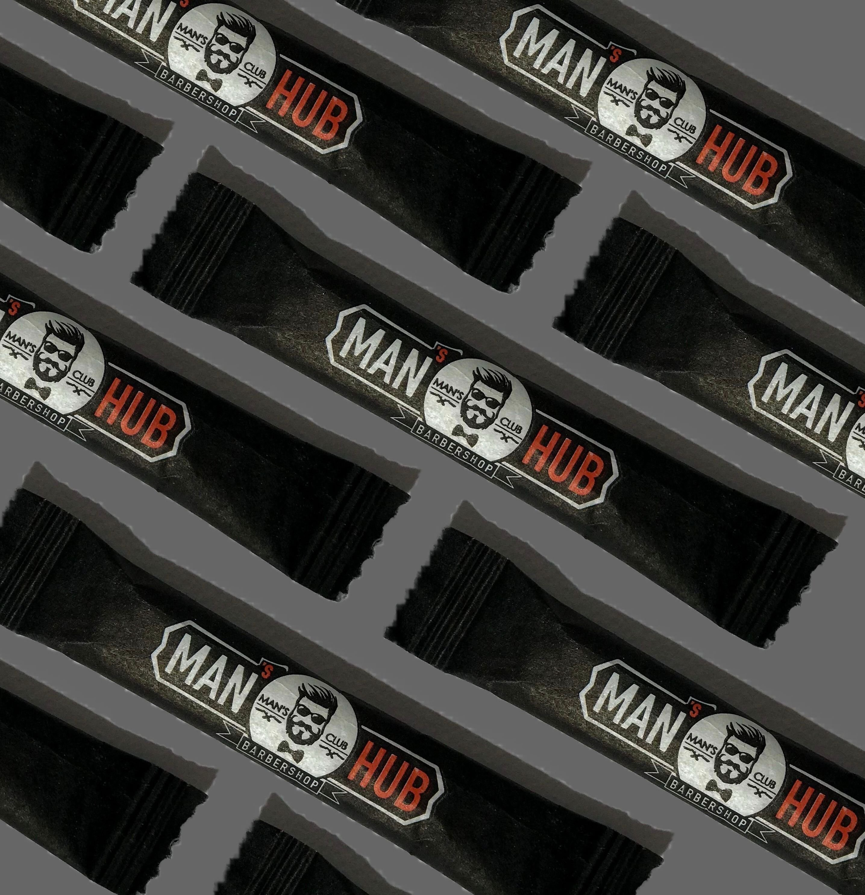

Є ерогенні точки, а є ТОЧКИ КОНТАКТУ
⠀
Впринципі, вони трохи схожі за властивостями. Тільки точки контакту - це численні і різноманітні місця та ситуації дотику клієнта до компанії (бренда). Щоразу, коли клієнт в будь-який спосіб, в будь-який час контактує з компанією виникає точка контакту.
⠀
В цій точці клієнти приймають критично важливі рішення для вашого бізнесу:
- починати з вами працювати, чи ні
- продовжувати з вами працювати чи перейти до конкурентів
⠀
При всьому розмаїтті товарів і послуг на ринку, компанії мають відрізнятись сервісом, щоб утримувати клієнта і завойовувати його симпатію. А точки контакту-це як невидимі ниточки, між вами і клієнтом. І головне - розумно ними користуватись.
⠀
Ось пропонуємо вам ще один варіант точки контакту- цукор в індивідуальній упаковці з вашим логотипом.
Спочатку виготовляємо кліше з вашим логотипом.
Потім друкуємо упаковку (пропонуємо вам матову чи глянцеву на вибір)
Фасуємо цукор
Надсилаємо вам новою поштою.
⠀
Мінімальне замовлення - 50 кг (приблизно 10 тис стіків) оптимальне - 100 кг (20 тис)
⠀
Всім солодкого життя!